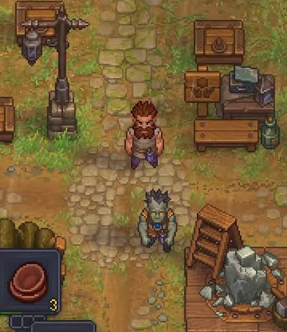

World Map and Story
I finally bought my first new car — and it's a Subaru! I love it!
My first Subaru experience was in 1970, as a poor college student. My girlfriend loaned me an older Subaru car. I call it a car, but it barely sat two people. It was so tiny, with 10-inch wheels, perhaps 10 feet long. But it had a two-stroke engine that got about 50 miles to the gallon, and it was so much fun to drive! Do you recall these vehicles?
Richard Wendel
Reno, NV
You have described the Subaru 360, the first Subaru car. It was introduced in Japan in 1958 and built until 1970.
Zombies
As I was driving home, I noticed the rainbow and had to stop to take a few pictures.
My WRX takes me safely through mud, under the rain, to the end of the rainbow!
Location: Fields along Molera Road (Moss Landing/Castroville, CA).
Heidi Funes-Fonseca
Freedom, CA
EXCLUSIVE SCREENSHOT
